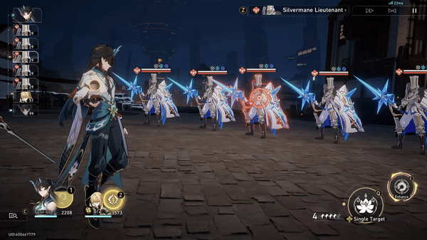

Basic Attack
Uses a 2-hit attack and deals Imaginary DMG equal to 50–110% of Dan Heng • Imbibitor Lunae's ATK to a single enemy target.
Skill

Enhances Basic ATK. Enhancements may be applied up to 3 times consecutively. Using this ability does not consume Skill Points and is not considered as using a Skill.
Enhanced thrice, Beneficent Lotus becomes Fulgurant Leap.
When using Divine Spear or Fulgurant Leap, starting from the fourth hit, 1 stack of Outroar is gained before every hit. Each stack of Outroar increases Dan Heng • Imbibitor Lunae's CRIT DMG by 6%–13.2%, for a max of 4 stacks. These stacks last until the end of his turn.
Enhanced Basic Attack

Uses a 7-hit attack and deals Imaginary DMG equal to 250%–550% of Dan Heng • Imbibitor Lunae's ATK to a single enemy target. From the fourth hit onward, simultaneously deal Imaginary DMG equal to 90%–198% of Dan Heng • Imbibitor Lunae's ATK to adjacent targets.
Ultimate

Uses a 3-hit attack and deals Imaginary DMG equal to 180%–324% of Dan Heng • Imbibitor Lunae's ATK to a single enemy target. At the same time, deals Imaginary DMG equal to 84%–151.2% of Dan Heng • Imbibitor Lunae's ATK to adjacent targets. Then, obtains 2 Squama Sacrosancta.
It's possible to hold up to 3 Squama Sacrosancta, which can be used to offset Dan Heng • Imbibitor Lunae's consumption of skill points. Consuming Squama Sacrosancta is considered equivalent to consuming skill points.